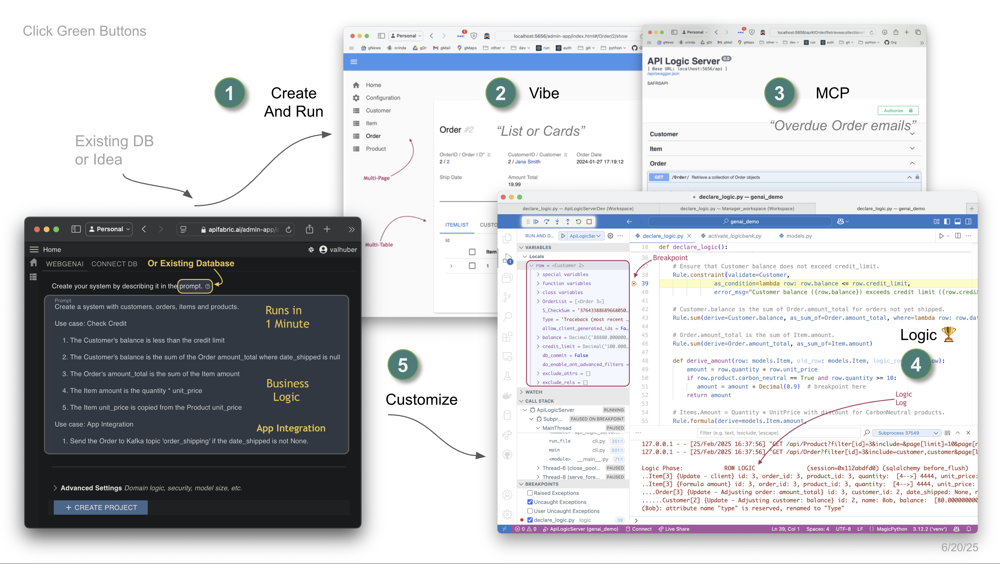
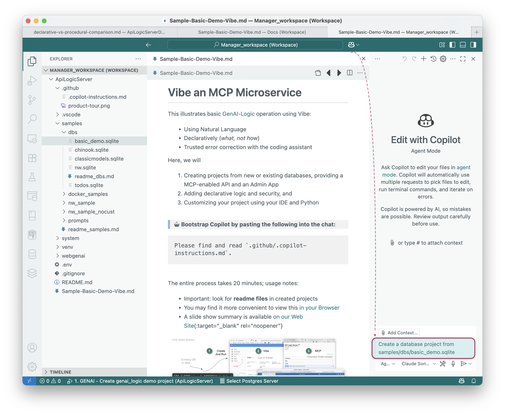
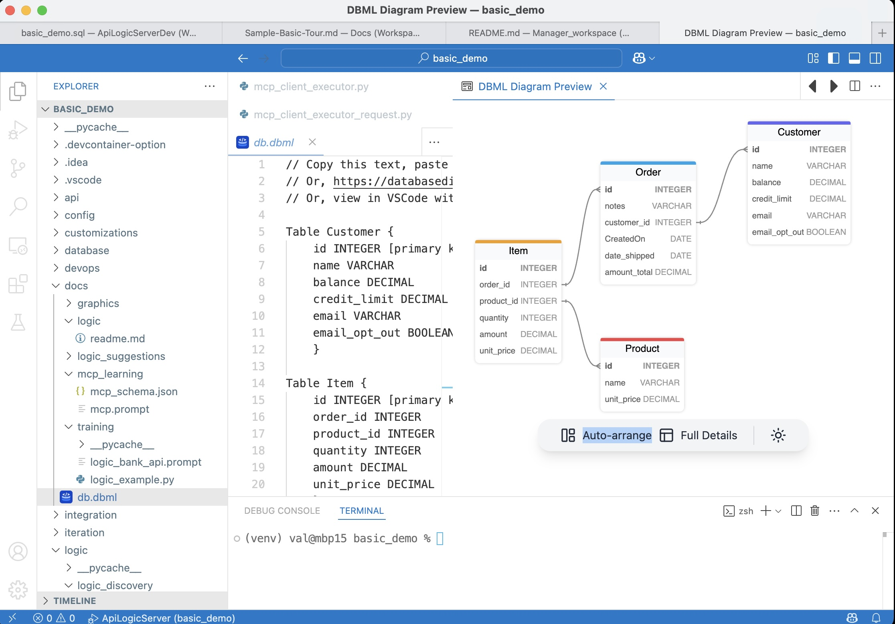
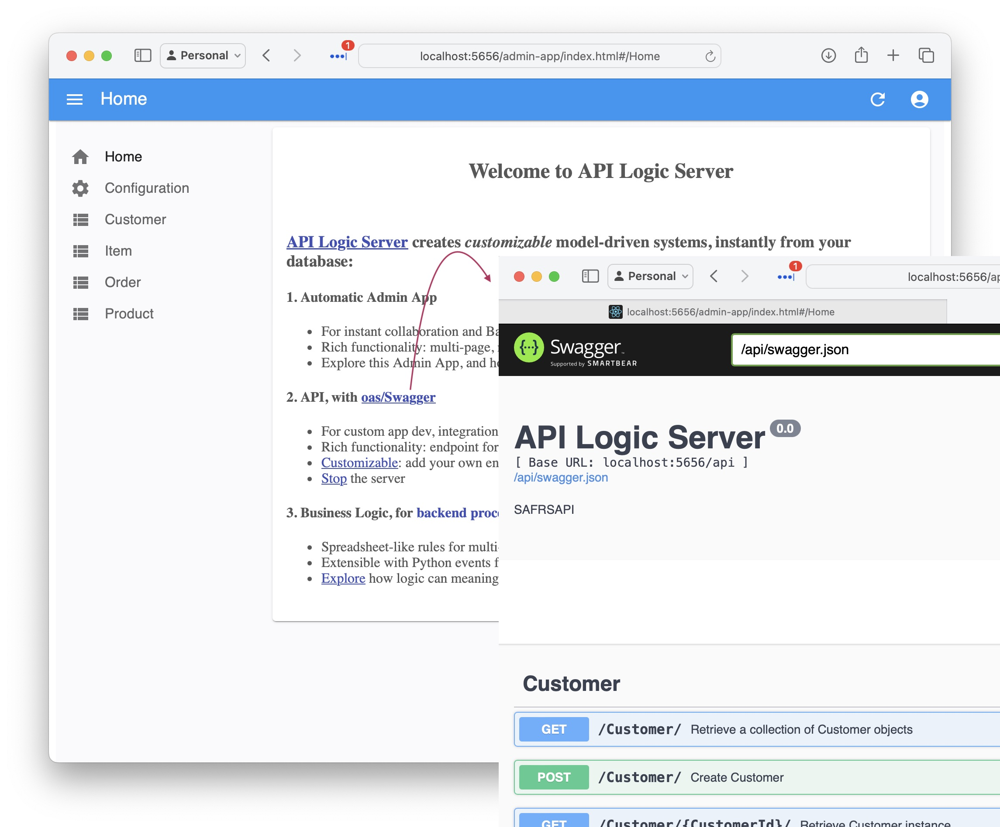
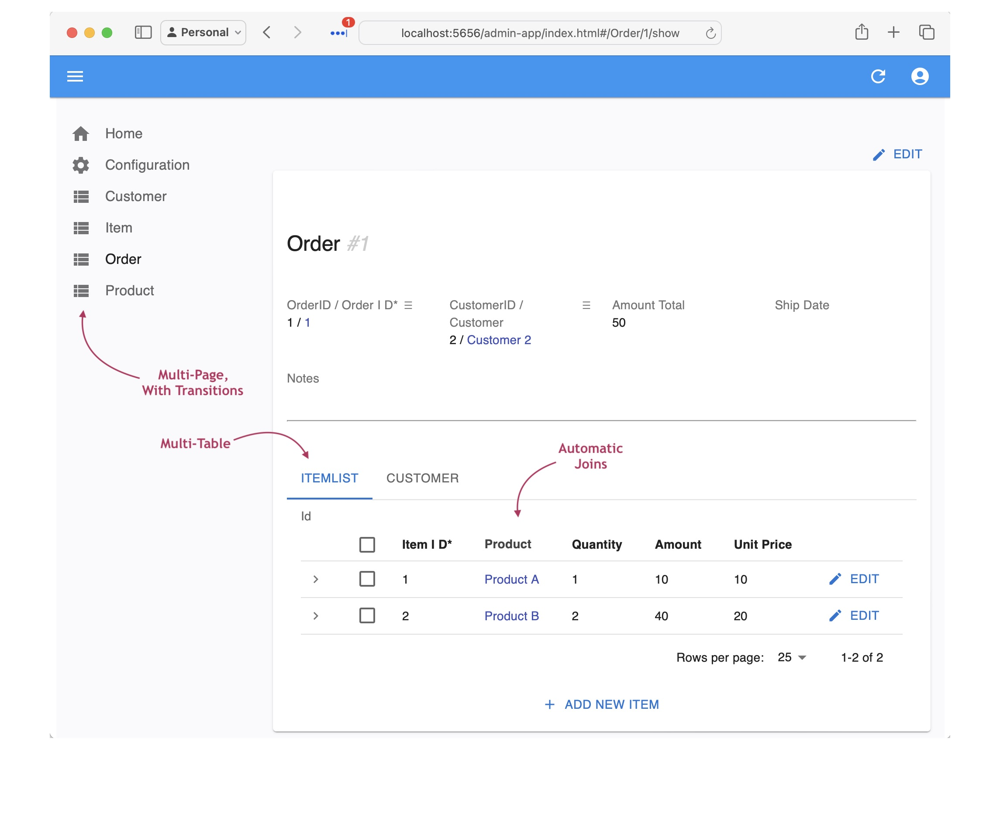
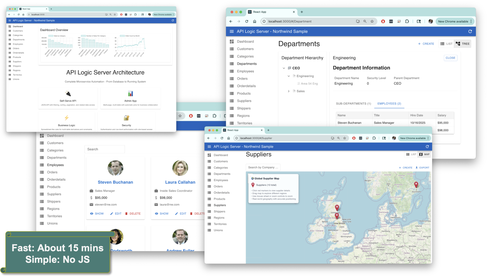
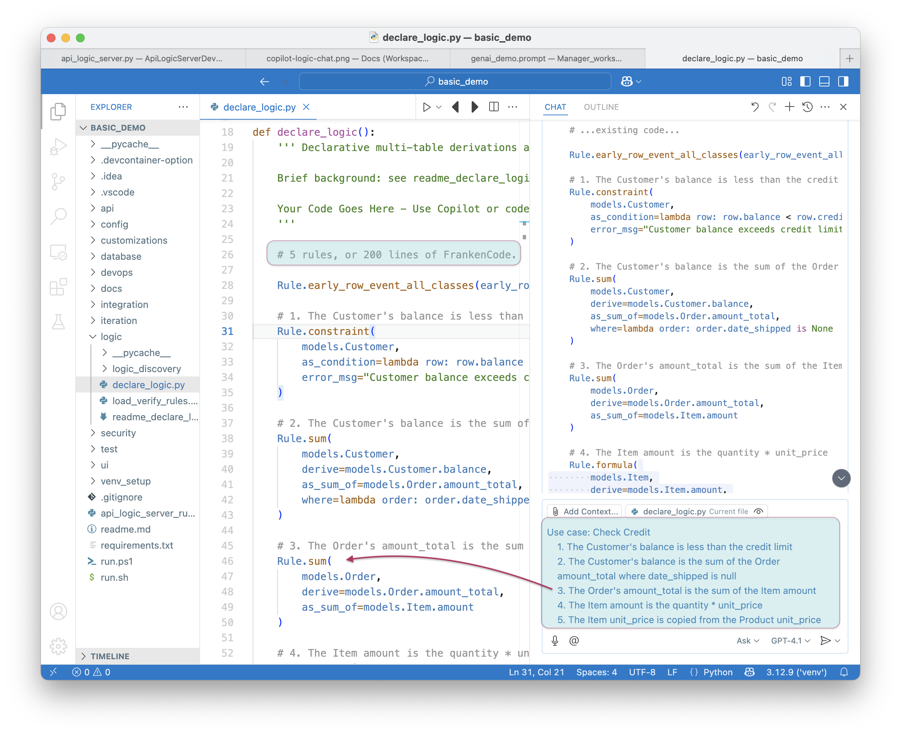
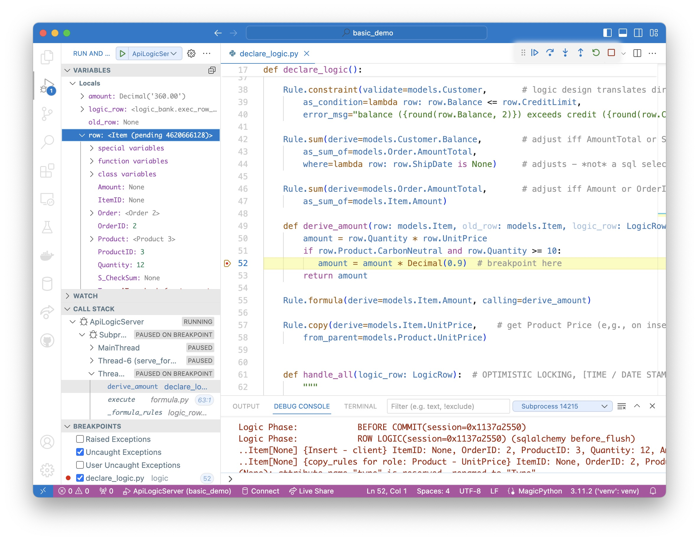
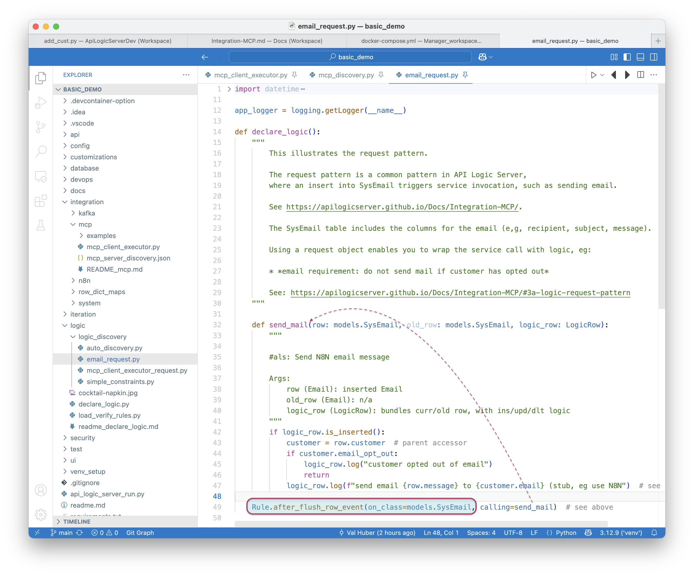
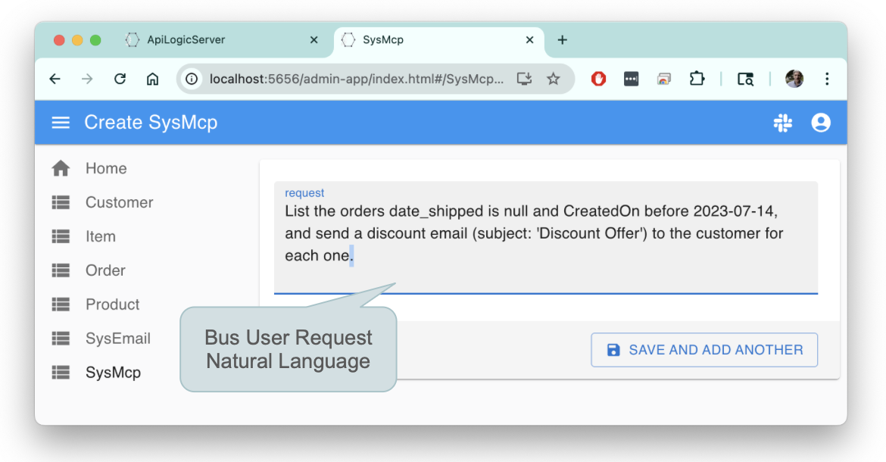

Basic Demo - Vibe
Vibe an MCP Microservice
This illustrates GenAI-Logic automation to create an MCP system using Vibe:
1) Natural Language, 2) Declarative (what not now), 3) Trusted error correction with the coding assistant
Please find and read `.github/.copilot-instructions.md`.
Demo Overview: Vibe an MCP API, Custom Client and Business Logic; pre-reqs
Here we will use Vibe to:
- Create a project from an existing database, providing a MCP-enabled API and an Admin App
- Create a custom (React) client
- Create an MCP Client, and
- Add declarative logic and security
Pre-reqs:
- Install
- OpenAI API Key is useful but not required; click here.
- The React App has pre-built apps (
ui/my-react-app) you can use; they requirenpm install; npm start - The
integration/mcp/mcp_client_executor.pyhascreate_tool_context_from_llmset to bypass LLM calls and use saved context; alter as required. 3. NodeJS to run the react app
The entire process takes 20 minutes; usage notes:
- Most find it more convenient to view this in your Browser; click here
- A slide show summary is available on our Web Site
- Important: look for readme files in created projects

1. Create From Existing DB
Create a database project from samples/dbs/basic_demo.sqlite
The database is Customer, Orders, Items and Product; you can also create the dataase

Or, create a new database with this prompt:
Create a system with customers, orders, items and products.
Include a notes field for orders.
Use case: Check Credit
1. The Customer's balance is less than the credit limit
2. The Customer's balance is the sum of the Order amount_total where date_shipped is null
3. The Order's amount_total is the sum of the Item amount
4. The Item amount is the quantity * unit_price
5. The Item unit_price is copied from the Product unit_price
Use case: App Integration
1. Send the Order to Kafka topic 'order_shipping' if the date_shipped is not None.
In either case, the database model is customer, orders and items:

1a. Project Opens: Run
The project should automatically open a new window in VSCode.
Please find and read `.github/.copilot-instructions.md`.
Run it as follows:
- Start the Server: F5
- Start the Admin App: browse to http://localhost:5656/. The Admin App screen shown below should appear in your Browser.
- Verify as shown below
API: filtering, sorting, pagination, optimistic locking and related data access - see the Swagger
Your API is MCP enabled, and ready for custom app dev. For more information, click here.

Admin App: multi-page, multi-table, automatic joins, lookups, cascade add - collaboration-ready
For more information, click here.
The Admin App is ready for business user agile collaboration, and back office data maintenance. This complements custom UIs created with the API.
Explore the app - click Customer Alice, and see their Orders, and Items.

2. Custom UI: GenAI, Vibe
The app above is suitable for collaborative iteration to nail down the requirements, and back office data maintenance. It's also easy to make simple customizations, using the yaml file. For more custom apps, use Vibe:
Create a new react app using genai-add-app,
wait for it to complete,
then update the Product list to provide users an option to see results in a list or in cards.
Vibe Automation provides a running start (and can make errors)
- Instead of creating data mockups, you have a running API server with real data
- Instead of starting from scratch, you have a running multi-page app
- And, you'll have projects that are architecturally correct: shared logic, enforced in the server, available for both User Interfaces and services.
- Then, use you favorite Vibe tools with your running API:
Note: AI makes errors. Part of Vibe is to accept that, and insist that AI find and fix them. CoPilot is generally exceptionally good at this.
Below is an example from Northwind: click here

3. Declare Business Logic
Logic (multi-table derivations and constraints) is a significant portion of a system, typically nearly half. GenAI-Logic provides spreadsheet-like rules that dramatically simplify and accelerate logic development.
Rules are declared in Python, simplified with IDE code completion. The screen below shows the 5 rules for Check Credit Logic.
1. Stop the Server (Red Stop button, or Shift-F5 -- see Appendix)
2. Add Business Logic
Use case: Check Credit
1. The Customer's balance is less than the credit limit
2. The Customer's balance is the sum of the Order amount_total where date_shipped is null
3. The Order's amount_total is the sum of the Item amount
4. The Item amount is the quantity * unit_price
5. The Item unit_price is copied from the Product unit_price
Use case: App Integration
1. Send the Order to Kafka topic 'order_shipping' if the date_shipped is not None.

To test the logic:
1. Use the Admin App to access the first order for Customer Alice
2. Edit its first item to a very high quantity
The update is properly rejected because it exceeds the credit limit. Observe the rules firing in the console log - see Logic In Action, below.
Logic is critical - half the effort; Declarative is 40X More Concise, Maintainable
Logic is critical to your system - it represents nearly half the effort. Instead of procedural code, declare logic with WebGenAI, or in your IDE using code completion or Natural Language as shown above.
a. 40X More Concise
The 5 spreadsheet-like rules represent the same logic as 200 lines of code, shown here. That's a remarkable 40X decrease in the backend half of the system.
💡 No FrankenCode
Note the rules look like syntactically correct requirements. They are not turned into piles of unmanageable "frankencode" - see models not frankencode.
b. Maintainable: Debugging, Logging
The screenshot below shows our logic declarations, and the logging for inserting an Item. Each line represents a rule firing, and shows the complete state of the row.
Note that it's a Multi-Table Transaction, as indicated by the indentation. This is because - like a spreadsheet - rules automatically chain, including across tables.

4. Enterprise Connectivity - B2B
To fit our system into the Value Chain, we need a custom API to accept orders from B2B partners, and forward paid orders to shipping via Kafka.
Create a B2B order API called 'OrderB2B' that accepts orders from external partners.
The external format should map:
- 'Account' field to find customers by name
- 'Notes' field to order notes
- 'Items' array where each item maps 'Name' to find products and 'QuantityOrdered' to item quantity
The API should create complete orders with automatic lookups and inherit all business logic rules.
The Kafka logic was created earlier, so we are ready to test.
You can use Swagger (note the test data is provided), or use CLI:
curl -X POST http://localhost:5656/api/OrderB2BEndPoint/OrderB2B -H "Content-Type: application/json" -d '{"meta":{"args":{"data":{"Account":"Alice","Notes":"RUSH order for Q4 promotion","date_shipped":"2025-08-04","Items":[{"Name":"Widget","QuantityOrdered":5},{"Name":"Gadget","QuantityOrdered":3}]}}}}'
Observe the logic execution in the VSCode debug window.
5. MCP: Logic, User Interface
The server is automatically mcp-enabled, but we also require a user-interface to enable business users to send email, subject to business logic for customer email opt-outs. Build it as follows:
1. Stop the Server: click the red stop icon 🟥 or press Shift+F5.
2. Create the SysEmail Table to Track Sent Emails
Create a table SysEmail in `database/db.sqlite` as a child of customer,
with columns id, message, subject, customer_id and CreatedOn.
3. Create an MCP Client Executor to process MCP Requests:
MCP Clients accept MCP Requests, invoke the LLM to obtain a series of API calls to run, and runs them. For more on MCP, click here.
4. Create the email service using a Request Table
Add an after_flush event on SysEmail to produce a log message "email sent",
unless the customer has opted out.
Inserts into SysEmail will now send mails (stubbed here with a log message). Request objects are a common rule pattern - for more information, click here.
Creates logic like this
When sending email, we require business rules to ensure it respects the opt-out policy:

5. Restart the Server - F5
6. Start the Admin App
7. Click SysMCP >> Create New, and enter:
List the orders date_shipped is null and CreatedOn before 2023-07-14,
and send a discount email (subject: 'Discount Offer')
to the customer for each one.

6. Iterate with Rules and Python
This is addressed in the related CLI-based demo - to continue, click here.